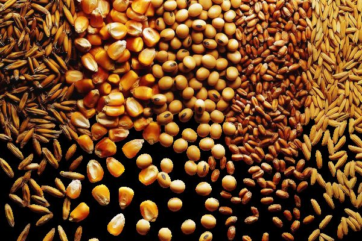

Grower
Solos & Nutrição
Consultoria, pesquisa e capacitação em fertilidade do solo e nutrição de plantas. Nossa missão é tornar sua lavoura mais produtiva e rentável.
Ciência, dados e prática
a serviço do campo
Uma consultoria técnica que conecta conhecimento científico à realidade de cada produtor.
História e compromisso
A consultoria Grower nasce com o compromisso de levar conhecimento técnico aplicado ao campo, conectando ciência, prática e a realidade do produtor. Desde o início, nossa atuação é pautada por responsabilidade técnica, proximidade com o cliente e foco em resultados consistentes.
Inovação e crescimento
A Grower acredita que inovar é evoluir junto com o agro. Por isso, investe continuamente em atualização técnica, metodologias modernas e análise de dados, promovendo decisões mais assertivas e sustentáveis para cada sistema produtivo.
Expertise
A equipe Grower é formada por profissionais com sólida base técnica e ampla vivência prática em diferentes regiões e culturas. Essa combinação permite uma leitura precisa dos desafios do campo e o desenvolvimento de estratégias personalizadas, alinhadas às necessidades de cada cliente.
Crescimento constante
O crescimento da Grower é reflexo da confiança construída ao longo do tempo. A consultoria evolui junto com seus parceiros, fortalecendo relações, aprimorando processos e ampliando sua atuação, sempre com foco em eficiência, produtividade e longevidade dos sistemas agrícolas.
Missão
Gerar valor no campo por meio de consultoria técnica aplicada, conectando ciência, dados e prática agronômica para apoiar decisões mais eficientes, sustentáveis e rentáveis aos produtores e parceiros.
Visão
Ser referência nacional em consultoria agronômica técnica e estratégica, reconhecida pela credibilidade científica, proximidade com o campo e capacidade de transformar conhecimento em resultado produtivo.
Valores
Ética, transparência e verdade técnica, atuando com base em dados, experiência prática e responsabilidade profissional. Parcerias duradouras, proximidade com o campo e inovação contínua, sempre com foco em resultados sustentáveis.
Três frentes, um mesmo foco:
fertilidade e nutrição de plantas
A Grower atua em consultoria, pesquisa e capacitação, com uma equipe multidisciplinar de doutores, mestres, agrônomos e estudantes de agronomia.
Consultoria
- Consultoria para produtores
- Consultoria para consultores
- Projetos de validação
Pesquisa
- Consultoria para estações de pesquisa
- Condução de protocolos
- Projetos de validação
Academy
- Grower Experience
- Imersões
- Mentoria
- Palestras
Imersão GSN
Evento presencial de dois dias promovido pela unidade GSN (Solos & Nutrição) da Grower Academy. Reúne agrônomos, consultores, produtores rurais e representantes da indústria para uma imersão técnica em fertilidade do solo e nutrição de plantas.
Em 2026, as imersões em Palmas (TO), Cuiabá (MT) e Uberlândia (MG) reuniram 389 participantes.
- Avaliação da fertilidade
- Planejamento de calagem e gessagem
- Planejamento da nutrição com NPK
- Planejamento de correção com micronutrientes
- Evolução da fertilidade
- Nutrição foliar e fisiologia
- Suporte online
Expertise nas principais culturas do Brasil
A Grower atua de forma estratégica no manejo das principais culturas do sistema produtivo brasileiro. Essa experiência é construída a partir da integração entre ciência, dados de campo e vivência prática em diferentes regiões, permitindo recomendações assertivas, adaptadas à realidade de cada cultura, ambiente de produção e objetivo do produtor.

Plataformas próprias
para decisões baseadas em dados
A Grower desenvolve suas próprias plataformas digitais para organizar dados de campo, planejar a nutrição e acompanhar a evolução de cada área assistida, junto com a equipe e com os clientes.
Banco de dados agronômico
Histórico das áreas, análises de solo, evolução da fertilidade e nutrição foliar reunidos em um só lugar.
Planejamento foliar
Ferramenta própria para montar e revisar manejos foliares, com cálculos técnicos e avisos de compatibilidade entre produtos.
Relatórios e zonas de manejo
Relatórios de safra, calculadoras técnicas e geração de zonas de manejo com geoprocessamento.
Vamos conversar?
Fale com a Grower e conheça como podemos apoiar o planejamento de fertilidade e nutrição da sua lavoura.